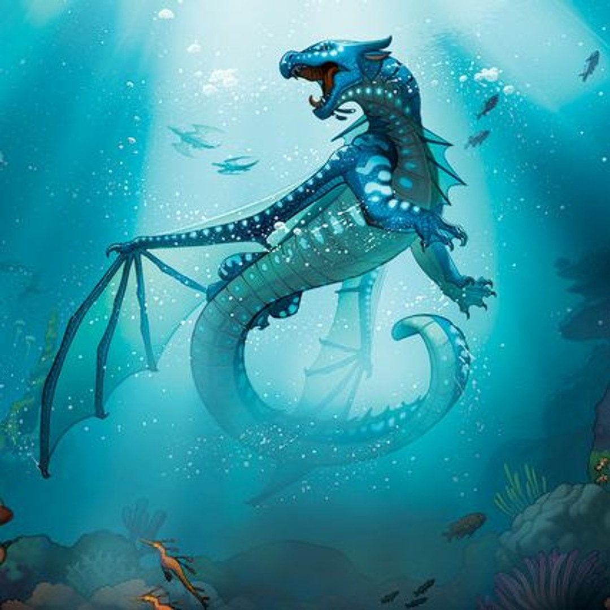

Title
Home
Overview
Tsunami of the SeaWings is a young adult dragon who lives on Pyrrhia. She is a viciously loyal dragon who serves as the head of Jade Mountain Academy.

Princess Tsunami of the SeaWings
Additional Information
Tsunami is currently alive. She has no known health problems.